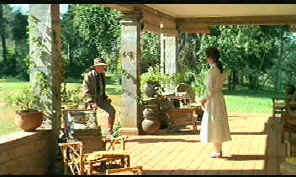

|
Out of Africa(SE)/B+,B+ |
|
Universal/1985/161/ANA 1.85 |
Out of Africa is a first class production. From photography to setting to design, director Sydney Pollack's film is a paradigm of taste. The pacing is contemplative, with many landscape shots of Africa over which John Barry's romantic score emphasizes the images. Don't expect a lot of action or even hot-blooded romance.
|
 |
|
Finch-Hadden arrives. ©Universal |
Taken from Karen Blixen's (Isak
Dinesen is the name under which her memoirs are written) memoirs
of her African experience and other writings, Out of Africa
focuses mainly on romance, failed and otherwise. There's a lion*
or two thrown into the mix, some quaint interaction with the
native population, but it is her romantic relationships that
rule the movie. The Danish Blixen begins her life in Kenya in a
self-made marriage of convenience, but it is soon evident that
what hopes she has for a full life with Baron Blor Blixen will
never come to fruition. She turns to the land and the native
Africans that life on their property. Growing coffee or tending
to native ailments is no substitute for a man. Fortunately, a
British hunter, Denys Finch-Hatton, makes is attracted to Karen
and moves right in to her heart, where Blor never took up
residence. The natural
reserve of these characters hides the passions underneath the
surface. Even at her most emotional, Karen Blixen is
restrained. Finch-Hatton has a coldness about him that even
weathers the hot African veldt. Blor is child-like in his
devotion to pleasure, but he has no idea of what a real
relationship should be like.
Meryl Streep gives another of her chameleon performances as the independent Karen
Blixen. Streep's accent adds an
interesting coldness to Karen, casting her alone amidst the
African landscape. Her humane acts, caring for the native
Africans that live on her property, are hidden by the icy
veneer. There's only one moment when the wellspring of feelings
comes to the forefront, as she departs Africa and asks her
manservant Farah to say her name. It is a beautiful moment which
brings emotional spark to Karen that is missing for the entire
film. Redford is a stoic man of the land as Denys Finch-Hatton.
His laconic acting style suits the character quite well. Klaus
Maria-Brandauer tries hard to be charming as the Baron, but it's
a difficult role at best. In Song of Africa, the accompanying
documentary on this special edition, Streep comments
on a scene which she felt goes against the grain of her
character when she says to Finch-Hatton that she forbids him
from taking Felicity on a trip to Somali. I rather agree that it
was a large false step on the part of Pollack and undermines the
character built by Streep.
David Watkin's lighting of Out of
Africa is superlative and the special edition DVD from
Universal preserves it very nicely. The land dominates the
visuals and, though the long lens shots are often grainy, they
looks very fine on DVD, with tightly controlled elements.
Perhaps the color could have been a spot richer, but the magnificence
of the setting is justly delivered. Don't expect the precision
sharpness of a special effects movie here. Images are sharp
enough to get into the soul of the characters, though the script
prevents much depth on that account. The music is
beautiful and recorded with a lush, open feeling. Surround
information is not aggressive, but the feeling of place is
well-maintained. Maybe I would have liked the hot breath
of a lion bearing down on my preferred home theater seat, but
Pollack's film takes a more casual and even approach to everything.
Sydney
Pollack's memories of Out of Africa are remarkable.
Details of photographic stock, lighting schemes, stories from
the set, all come to vivid life in Pollack's special edition audio
commentary. The director is equally at ease talking
story or technique. He touches on virtually every aspect of the
production, from the animals to lens apertures to weather
problems. This is a mightily impressive commentary track
delivered with eloquence by Pollack. A keeper and a teacher.
Along with Pollack's astute commentary is a
top-notch documentary about Out of Africa directed by
Charles Kiselyak, Song of Africa, which runs about fifty
minutes. Kiselyak also did the fine documentary on Universal's To
Kill a Mockingbird special edition DVD. Director
Pollack, star Streep, composer John Barry, and Blixen biographer
Judith Thurman all share their observations on the documentary,
as well as some brief comments from writer Kurt Luedtke. I
especially loved listening and watching Meryl Streep talk about
her experience with forthright honesty.
*Professional zookeeper Shari Meyr pointed out that my reference to tigers (since changed to lions) was ignorant of the African animal population.
The
Feature
Archive has articles ranging from
Akira
Kurosawa
to
Blonde
Bimbos,
The
Heistmasters
and
Frank
Darabont.

Click on the image above for a "dream interview"
with director
John
Ford.
Check out the Movie
Poster Archive
for short bios and images of
Susan Hayward, Kirk Douglas, Katharine Hepburn and many more.
This month's featured star is Gregory
Peck.

National
Preservation Film Board
Learn about what this organization is doing to preserve our film
heritage. Want to know the guidelines for proper handling of
film? This is the place.
Direct
from the corridors of the Home Theater Forum ,
Home Theater Talk is the newest
place on the Net to discuss everything home theater. Friendly
atmosphere and knowledgeable folks are the secret ingredients.
,
Home Theater Talk is the newest
place on the Net to discuss everything home theater. Friendly
atmosphere and knowledgeable folks are the secret ingredients.
DVD
Verdict
They
may be judgmental, but that's the point, isn't it. Lots of DVD
reviews plus news and more.
Click on the link to visit the judge's chambers

Imaging Science Foundation
promotes proper
standards in home theater viewing. ISF trained technicians offer
monitor calibration services to consumers. The difference in
a properly calibrated monitor can be astounding. Click on
the image to find an ISF member near you.
Home
Theater Reference Reviewing System

When you read a DVD review it's of utmost importance to know
what equipment is being used to evaluate quality. Click on the
projector to find out more.